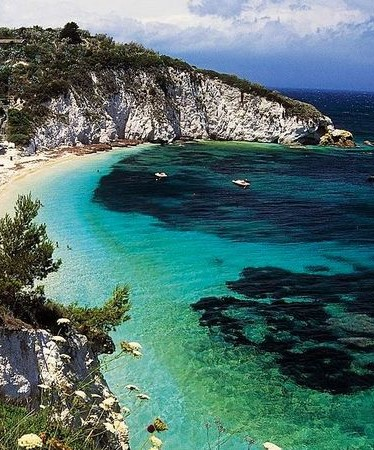
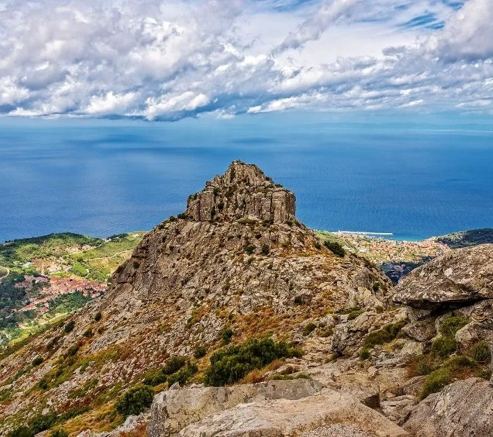
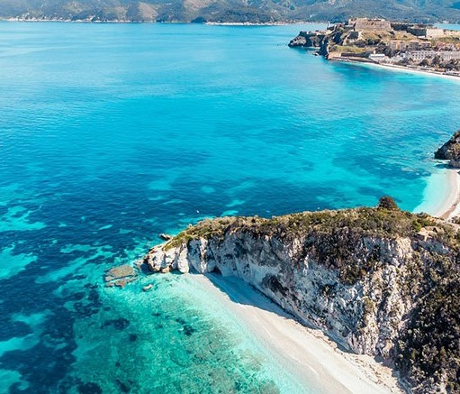

Parco Nazionale dell’Arcipelago Toscano
Il Parco Nazionale dell’Arcipelago Toscano è un’area protetta che comprende le sette isole maggiori dell’arcipelago (Elba, Giglio, Capraia, Montecristo, Pianosa, Giannutri e Gorgona), oltre a numerosi isolotti minori e tratti di mare circostanti.
Istituito nel 1996, rappresenta il più grande parco marino d’Europa e una delle realtà naturali più preziose dell’intero bacino del Mediterraneo. Questa porzione di mare racchiude ecosistemi costieri: spiagge sabbiose, scogliere a picco, macchia mediterranea, pinete e fondali che pullulano di vita.
Il fascino del Parco risiede anche nella compresenza di elementi storici e culturali che, nel corso dei secoli, hanno segnato la vita di queste isole, rendendole scrigni di biodiversità e di tradizioni millenarie.
Attività specifiche


Cenni su flora e fauna
La macchia mediterranea domina molti tratti costieri, con arbusti di rosmarino, ginepro, lentisco e corbezzolo. Nei versanti più umidi trovano spazio lecci e pini, mentre le zone più elevate dell’Elba ospitano castagneti. Per quanto riguarda la fauna, è possibile osservare mufloni, cinghiali e varie specie di uccelli migratori che utilizzano le isole come tappa durante i loro spostamenti.
Sulle scogliere nidificano il falco pellegrino e il gabbiano corso, specie protetta. I fondali, ricchi di grotte e secche, costituiscono il regno di cernie, saraghi, polpi e aragoste, oltre a stelle marine di ogni forma e colore. Grazie ai programmi di conservazione messi in atto dal Parco, molte specie a rischio hanno trovato qui un rifugio sicuro
È importante ricordare che, in determinate aree marine protette, la pesca è regolamentata per preservare gli equilibri dell’ecosistema.
Punti di interesse
siti archeologici e borghi
L’Isola d’Elba, la più estesa, è famosa per la residenza di Napoleone Bonaparte durante il suo esilio, ma offre anche incantevoli spiagge e sentieri panoramici che si snodano tra i vigneti e le colline. Il Monte Capanne, con i suoi oltre mille metri di quota, regala una vista unica sulle altre isole. L’Isola del Giglio si distingue per il suggestivo porto colorato e per il borgo antico di Giglio Castello, circondato da mura medievali.


meraviglie naturali
Capraia, originata da antichi vulcani sottomarini, è un paradiso per gli amanti del trekking, che qui trovano sentieri affacciati su un mare turchese. Montecristo, resa celebre dal romanzo di Dumas, è una riserva integrale accessibile solo con permessi speciali, mentre Pianosa e Gorgona, in parte sedi di istituti penitenziari, presentano ecosistemi marini eccezionalmente ben conservati. Giannutri, infine, incanta con le sue grotte e gli antichi resti romani in prossimità del mare. Ognuna di queste isole racchiude peculiarità geologiche e botaniche che attraggono ricercatori e appassionati di natura da tutto il mondo.